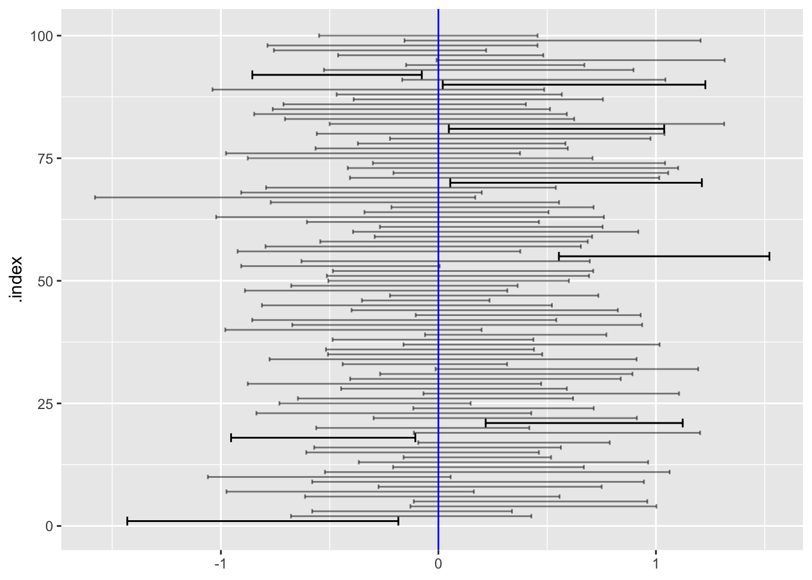

one_trial <- function(n=2) {
vals <- rnorm(n)
tibble(m = mean(vals), s = sd(vals))
}Math 300R Lesson 23 Reading Notes
title goes here
Review
- Case : a row in a data frame
- Sample: a data frame.
- Summarized sample: lm(model, data=dataframe) %>% summary()
This is as far as we can go with real data. DAG simulation (gaming) let us go further:
- Sample: a draw of \(n\) cases from the DAG: sample(DAG, size=50)
- Trial: a summarized sample:
r trial <- function(n=50) { lm(tilde, data=sample(DAG, size=n) %>% summary() } - Repeated trials to see sampling:distribution:
do(100) * trial() - Summarize the repeated trials: e.g. standard deviation of trial-by-trial coefficients
r do(100) * trial() %>% summarize(sd = sd(coef_on_x))We found that the standard deviation of trial-by-trial coefficient
- Is smaller if \(n\) is bigger.
- Specifically, is proportional to \(\frac{1}{\sqrt{n}}\).
Bootstrapping
Regression table
Is sampling variation the issue?
From the 2018 StatPREP newsletter
In 1996 my department chair handed me the first statistics textbook I had ever seen. That single gesture constituted my college’s faculty development program for teaching statistics. One of the earliest examples in the book was about the importance of random sampling. It included a picture of President Truman holding up the Chicago Tribune’s infamous “Dewey Defeats Truman” headline. It’s a good story, but hardly timely, having taken place 48 years earlier. Few of my students knew who Truman was and none of them knew anything about Dewey.
Our students have grown up in an era of “scientific” polling. Being scientific, the results are reported with a margin of error, often ±3 percentage points, to help us know when conclusions are warranted and when not. Many of our statistics courses feature units on constructing a margin of error on a sample proportion, often with explicit reference to political polls. But, like Dewey defeating Truman, the story is no longer timely. The “error” in the “margin of error” is now only a small part of the unreliability of polls. Why?
In an unprecedented opening up of the process of polling, The New York Times is letting us observe, live, their polling for the 2018 mid-term elections. You’ll find a description of the project in a September 2018 column and the live action here. It’s worth watching.
For those of you reading this after the polling ends, I’ll describe the action. As I write this, 2,070,469 telephone calls have been made. In each Congressional district, the results from the past calls are laid out in a long line of circles, filled red or blue depending on the the recipient’s response. But only 1 or 2% of the dots are filled. The large majority are empty: no response. Each new call generates a wiggling box at the head of the line of dots. It wiggles until the end of the call. Almost always, the box turns into an unfilled circle.
The poll I’m watching now, New Jersey 3rd district, is in its early stage. 4250 calls producing 62 responses. The margin of error? There’s a simple but meaningful statement laid right on top of the grayed-out tally so far: “Don’t take this poll seriously until we reach at least 250 people. We’re at 62.”
The calls are made based on a random selection from the phone numbers known to be in the district. But the random selection hardly generates a random sample when the response rate is 2%. To get something that resembles the population, pollsters weight their results. The New York Times is weighting “by age, party registration, gender, likelihood of voting, race, education and region, mainly using data from voting records files compiled by L2, a nonpartisan voter file vendor.” And then there’s the “likely voter” model, an informed guess about what fraction of people in each weighting strata will actually vote. There’s a detailed explanation in this article on the site, where the faulty results from the 2016 presidential election are attributed to a failure to weight by education level.
Seeing the polling process in such detail reveals our misconceptions about what’s important in statistics. The so-called “margin of error” is not an adequate indicator of the reliability of the poll. Instead, we need to be thinking about the factors used in weighting and the extent to which they capture the current configuration of political schisms. Polls are now about big, multivariable data (the “voting records compiled by L2”) and building models of turnout based on previous elections.
Margin of error
The confidence interval from each trial will be \(m \pm \beta s\), where \(\beta\) is a number yet to be determined. How to do so, we want to select \(\beta\) so that, across all trials, 95% will include the mean of the distribution from which the data values were drawn.
# vary beta until 95% of the trials have a left value smaller than zero.
n <- 10000
beta <- 0.02
Trials <- do(1000) * one_trial(n=n) %>%
mutate(left = m - beta*s, right = m + beta*s)
Trials %>%
summarize(coverage = sum(sign(left*right) < 0)/n())# A tibble: 1 × 1
coverage
<dbl>
1 0.956For sample size \(n=10\), \(\beta\) needs to be 0.72, while for a sample size \(n=100\), \(\beta\) needs to be 0.20. For \(n=1000\), the multiplier needs to be 0.062, and so on. For \(n=10000\), the multiplier needs to be 0.02
| n | \(\beta\) | \(t = \beta / \sqrt{\strut n}\) |
|---|---|---|
| 10 | 0.72 | 2.26 |
| 15 | 0.55 | 2.14 |
| 20 | 0.47 | 2.09 |
| 50 | 0.28 | 2.01 |
| 100 | 0.20 | 1.98 |
| 500 | 0.088 | 1.96 |
| 1000 | 0.062 | 1.96 |
| 10000 | 0.20 | 1.96 |
Notice that as \(n\) gets bigger, the size of \(\beta\) to cover 95% of the trials gets smaller. More than a century ago, it was known that the multiplier for any sample size \(n\) is effectively \(2/\sqrt{n}\). Consequently, the confidence interval for the mean of \(n\) values is approximately
\[\mathtt{CI} = \mathtt{mean(x)}\pm \underbrace{\frac{2}{\sqrt{n}} \mathtt{sd(x)}}_\text{margin of error}\]
The quantity following the \(\pm\) is called the “margin of error.” Because of the \(\pm\), he overall length of the confidence interval is twice the margin of error.
It’s much easier to remember \(2/\sqrt{n}\) than a list of \(\beta\) values that change from one \(n\) to the next. Another ubiquitous memory aid involves another technical term, the standard error. This involves a simple re-arrangement of the equation for the confidence interval:
\[\mathtt{CI} = \mathtt{mean(x)}\pm 2\underbrace{\frac{\mathtt{sd(x)}}{\sqrt{n}}} _\text{standard error}\]
It’s standard in statistical software to report the standard error of a coefficient. Usually abbreviated se or std.error or something similar. The software is doing the divide-by-\(\sqrt{n}\) for you, so all you need to construct the margin of error is multiply the standard error by 2. That’s convenient, but it comes at the cost of yet another use of the words “standard” and “error,” which can be confusing.
Here’s an example of a typical software output summarizing a model in the format called a “regression report.” Here’s an example, looking at the fuel economy of cars (mpg) as a function the car’s weight (wt) and horsepower (hp).
lm(mpg ~ wt + hp, data = mtcars) %>%
broom::tidy()# A tibble: 3 × 5
term estimate std.error statistic p.value
<chr> <dbl> <dbl> <dbl> <dbl>
1 (Intercept) 37.2 1.60 23.3 2.57e-20
2 wt -3.88 0.633 -6.13 1.12e- 6
3 hp -0.0318 0.00903 -3.52 1.45e- 3According to this report, each additional 1000 lbs of weight decreases fuel economy by an estimated 3.9 miles per gallon. But since the model is based on a sample of data, it’s important to report the precision of that number in the face of sampling variation. The confidence interval is the standard format for that precision. It will be the estimate plus-or-minus two times the standard error, that is: \(-3.88 \pm 2\times0.633\), that is, -5.15 to -2.61 mpg per 1000 lbs. Similarly, each addition horsepower (hp) lowers fuel economy by \(-0.032 \pm 2 \times 0.009\), that is, -0.05 to 0.013 mpg per horsepower.
Even more convenient is to calculate the confidence interval with confint() which handles all the computations, including the ones for tiny \(n\) described in ?@sec-tiny-n.
How many digits?
Notice that the estimate of the wt coefficient in the above regression report is -3.87783074. That seems like an awful lot of digits to report when the confidence interval is -5.15 to -2.61. Or, rather, an awful lot of digits for the human reader.
It is of course easy for the human to ignore the last several digits of the number. This makes reading more reliable; there are not as many digits to confuse. Even worse, the many digits suggest a level of precision that is belied by the width of the confidence interval. (When the number is going to be part of a continuing computation, that is, the “reader” is a computer, mis-interpretion or faulty reading is not an issue, which is why the software calculates so many digits .)
So how many digits ought to be reported for a human reader? There is an easy procedure to determine this.
Look at the standard error in the regression report and multiply by 2 to get the margin of error. For example, for the
hpcoefficient, the margin of error is \(2 \times 0.63273349 = 1.265467\).It is always the case that no more than two digits of the margin of error have any meaning. (Even the second digit would suffer sampling variation.) So round the margin of error to two digits, that is 1.3 for the
hpstandard error.Notice the location of the second digit of the rounded standard error. For
hp, the second digit is 3 and it’s located in the one-tenths place. Round the coefficient to this place. So, thehpcoefficient -3.87783074 will round to -3.9.The confidence interval, formatted for the human reader, will be the rounded coefficient plus-or-minus the rounded standard error. For
hp, the confidence interval will be \(-3.9 \pm 1.3\) or -5.2 to -2.6.
Tiny \(n\) (optional)
When you have a very small sample size—say, \(n=2\)—the values may coincidentally be very close together. Around 1907, William Gosset, a scientist at Guinness, discovered that such coincidences force \(\beta\) to be much larger than \(2/\sqrt{n}\) in order to produce confidence intervals that cover the mean of the data-generating process. Gosset’s particular interest was in making sense of Guinness’s standard testing protocols, which involve averaging the results from three small batches of beer ingredients. Contacting the leading statisticians of the day, Gosset was told that such small \(n\) is “brewing, not statistics.” Nonetheless, Gosset had to work within Guinness’s testing protocols, which were indeed brewing but still needed statistical interpretation.
Gosset carried out something very much like the trials we used above, but—amazingly—by hand, since this was the age before electronic computers. To see the problem he observed, let’s look at the confidence intervals calculated in 1000 trials with \(n=3\).
SHOW THE FOLLOWING FOR n=3, n=2 (the worst case), and n=10
n=10
beta <- 2 / sqrt(n)
Trials <- do(100) * one_trial(n=n) %>%
mutate(left = m - beta*s, right = m + beta*s)
gf_errorbarh(.index ~ left + right, data = Trials, alpha=0.5) %>%
gf_errorbarh(.index ~ left + right,
data = Trials %>% filter(left > 0 | right < 0)) %>%
gf_vline(xintercept = ~ 0, color="blue", inherit=FALSE)
Gosset effectively tabulated the \(\beta\) multipliers
| n | \(\beta\) | \(t = \beta / \sqrt{\strut n}\) |
|---|---|---|
| 2 | 8.98 | 12.7 |
| 3 | 2.48 | 4.30 |
| 4 | 1.59 | 3.18 |
| 5 | 1.24 | 2.78 |
| 6 | 1.04 | 2.57 |
| 7 | 0.92 | 2.44 |
| \(\vdots\) | ||
| 10 | 0.72 | 2.26 |
| 15 | 0.55 | 2.14 |
| 20 | 0.47 | 2.09 |
| 50 | 0.28 | 2.01 |
| 100 | 0.20 | 1.98 |
| 500 | 0.088 | 1.96 |
| 1000 | 0.062 | 1.96 |
You can see that for \(n\) bigger than 10 or 20, the \(t\) multiplier is 2. But for very small \(n\), the t-multiplier can be considerably larger.
You can see the wisdom of brewers here. They made tests by averaging measurements from three small batches of beer. If they had used only two batches, the confidence interval would be almost three times larger than for \(n=3\), making it very hard to conclude anything about whether the tests show the ingredients to be within the quality-control standards.
Gosset’s work was published under the pseudonym “Student,” since Guinness forbade employees to publish under their own names. Statisticians, recognizing the value of the work (and knowing the name behind the pseudonym), came to use the name \(t\), perhaps because tea was considered more refined than “beer.” In many statistics texts, you will see the phrase “Student t” to refer to how Gosset’s work is used.